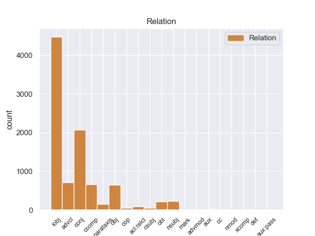
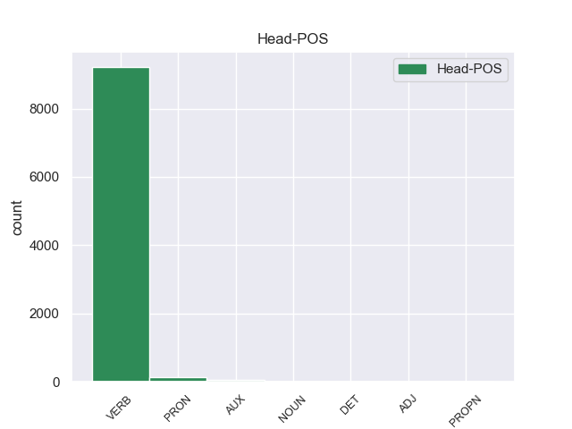
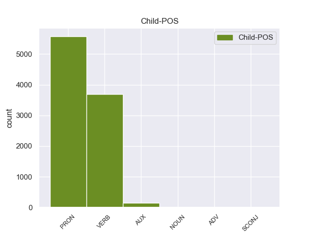

Distribution of features within this leaf



Agreement Rules sorted by frequency.
When the dependent token is None
1 En _ _ _ _ 0 _ _ _
2 1991 _ _ _ _ 0 _ _ _
3 , _ _ _ _ 0 _ _ _
4 como _ _ _ _ 0 _ _ _
5 ya _ _ _ _ 0 _ _ _
6 está _ _ _ _ 0 _ _ _
7 indicado _ _ _ _ 0 _ _ _
8 en _ _ _ _ 0 _ _ _
9 el _ _ _ _ 0 _ _ _
10 párrafo _ _ _ _ 0 _ _ _
11 anterior _ _ _ _ 0 _ _ _
12 , _ _ _ _ 0 _ _ _
13 se él PRON _ Case=Acc,Dat|Person=3|PrepCase=Npr|PronType=Prs|Reflex=Yes 14 iobj _ _
14 creó crear VERB _ Mood=Ind|Number=Sing|Person=3|Tense=Past|VerbForm=Fin 0 _ _ _
15 un _ _ _ _ 0 _ _ _
16 equipo _ _ _ _ 0 _ _ _
17 ad _ _ _ _ 0 _ _ _
18 hoc _ _ _ _ 0 _ _ _
19 para _ _ _ _ 0 _ _ _
20 averiguar _ _ _ _ 0 _ _ _
21 como _ _ _ _ 0 _ _ _
22 se _ _ _ _ 0 _ _ _
23 podía _ _ _ _ 0 _ _ _
24 desarrollar _ _ _ _ 0 _ _ _
25 el _ _ _ _ 0 _ _ _
26 Dialogo _ _ _ _ 0 _ _ _
27 Social _ _ _ _ 0 _ _ _
28 , _ _ _ _ 0 _ _ _
29 este _ _ _ _ 0 _ _ _
30 equipo _ _ _ _ 0 _ _ _
31 estaba _ _ _ _ 0 _ _ _
32 formado _ _ _ _ 0 _ _ _
33 por _ _ _ _ 0 _ _ _
34 representantes _ _ _ _ 0 _ _ _
35 de _ _ _ _ 0 _ _ _
36 todas _ _ _ _ 0 _ _ _
37 las _ _ _ _ 0 _ _ _
38 organizaciones _ _ _ _ 0 _ _ _
39 relacionadas _ _ _ _ 0 _ _ _
40 con _ _ _ _ 0 _ _ _
41 CES _ _ _ _ 0 _ _ _
42 , _ _ _ _ 0 _ _ _
43 UNICE _ _ _ _ 0 _ _ _
44 y _ _ _ _ 0 _ _ _
45 CEEP _ _ _ _ 0 _ _ _
46 ; _ _ _ _ 0 _ _ _
When the dependent token is None and the dependent token is VERB.
1 Una _ _ _ _ 0 _ _ _
2 vez _ _ _ _ 0 _ _ _
3 que _ _ _ _ 0 _ _ _
4 el _ _ _ _ 0 _ _ _
5 Hijo _ _ _ _ 0 _ _ _
6 de _ _ _ _ 0 _ _ _
7 Krypton _ _ _ _ 0 _ _ _
8 suelta sueltar VERB _ Mood=Ind|Number=Sing|Person=3|Tense=Pres|VerbForm=Fin 13 advcl _ _
9 el _ _ _ _ 0 _ _ _
10 misil _ _ _ _ 0 _ _ _
11 , _ _ _ _ 0 _ _ _
12 este _ _ _ _ 0 _ _ _
13 intenta intentar VERB _ Mood=Ind|Number=Sing|Person=3|Tense=Pres|VerbForm=Fin 0 _ _ _
14 huir _ _ _ _ 0 _ _ _
15 de _ _ _ _ 0 _ _ _
16 el _ _ _ _ 0 _ _ _
17 lugar _ _ _ _ 0 _ _ _
18 pero _ _ _ _ 0 _ _ _
19 es _ _ _ _ 0 _ _ _
20 atrapado _ _ _ _ 0 _ _ _
21 en _ _ _ _ 0 _ _ _
22 la _ _ _ _ 0 _ _ _
23 explosión _ _ _ _ 0 _ _ _
24 . _ _ _ _ 0 _ _ _
When the dependent token is None and the dependent token is VERB. and the dependent token is AUX.
1 El _ _ _ _ 0 _ _ _
2 entrenador _ _ _ _ 0 _ _ _
3 serbio _ _ _ _ 0 _ _ _
4 confía _ _ _ _ 0 _ _ _
5 en _ _ _ _ 0 _ _ _
6 el _ _ _ _ 0 _ _ _
7 jerezano _ _ _ _ 0 _ _ _
8 , _ _ _ _ 0 _ _ _
9 que _ _ _ _ 0 _ _ _
10 se _ _ _ _ 0 _ _ _
11 convierte _ _ _ _ 0 _ _ _
12 en _ _ _ _ 0 _ _ _
13 parte _ _ _ _ 0 _ _ _
14 fundamental _ _ _ _ 0 _ _ _
15 de _ _ _ _ 0 _ _ _
16 el _ _ _ _ 0 _ _ _
17 equipo _ _ _ _ 0 _ _ _
18 que _ _ _ _ 0 _ _ _
19 consigue _ _ _ _ 0 _ _ _
20 " _ _ _ _ 0 _ _ _
21 El _ _ _ _ 0 _ _ _
22 Doblete _ _ _ _ 0 _ _ _
23 " _ _ _ _ 0 _ _ _
24 , _ _ _ _ 0 _ _ _
25 es ser AUX _ Mood=Ind|Number=Sing|Person=3|Tense=Pres|VerbForm=Fin 29 cc _ _
26 decir _ _ _ _ 0 _ _ _
27 , _ _ _ _ 0 _ _ _
28 que _ _ _ _ 0 _ _ _
29 gana ganar VERB _ Mood=Ind|Number=Sing|Person=3|Tense=Pres|VerbForm=Fin 0 _ _ _
30 la _ _ _ _ 0 _ _ _
31 Liga _ _ _ _ 0 _ _ _
32 y _ _ _ _ 0 _ _ _
33 la _ _ _ _ 0 _ _ _
34 Copa _ _ _ _ 0 _ _ _
35 de _ _ _ _ 0 _ _ _
36 el _ _ _ _ 0 _ _ _
37 Rey _ _ _ _ 0 _ _ _
38 de _ _ _ _ 0 _ _ _
39 Fútbol _ _ _ _ 0 _ _ _
40 en _ _ _ _ 0 _ _ _
41 esa _ _ _ _ 0 _ _ _
42 misma _ _ _ _ 0 _ _ _
43 campaña _ _ _ _ 0 _ _ _
44 . _ _ _ _ 0 _ _ _
When the dependent token is None and the dependent token is VERB. and the dependent token is AUX. and the dependent token is NOUN.
1 Este _ _ _ _ 0 _ _ _
2 rey _ _ _ _ 0 _ _ _
3 libra _ _ _ _ 0 _ _ _
4 la _ _ _ _ 0 _ _ _
5 batalla _ _ _ _ 0 _ _ _
6 de _ _ _ _ 0 _ _ _
7 Clavijo _ _ _ _ 0 _ _ _
8 , _ _ _ _ 0 _ _ _
9 en _ _ _ _ 0 _ _ _
10 la _ _ _ _ 0 _ _ _
11 que _ _ _ _ 0 _ _ _
12 , _ _ _ _ 0 _ _ _
13 según _ _ _ _ 0 _ _ _
14 la _ _ _ _ 0 _ _ _
15 leyenda _ _ _ _ 0 _ _ _
16 , _ _ _ _ 0 _ _ _
17 el _ _ _ _ 0 _ _ _
18 apóstol _ _ _ _ 0 _ _ _
19 Santiago _ _ _ _ 0 _ _ _
20 a _ _ _ _ 0 _ _ _
21 lomos lomo NOUN _ Case=Acc|Gender=Masc|Number=Sing|Person=3|PrepCase=Npr|PronType=Prs 26 obl _ _
22 de _ _ _ _ 0 _ _ _
23 un _ _ _ _ 0 _ _ _
24 caballo _ _ _ _ 0 _ _ _
25 blanco _ _ _ _ 0 _ _ _
26 ayuda ayudar VERB _ Mood=Ind|Number=Sing|Person=3|Tense=Pres|VerbForm=Fin 0 _ _ _
27 a _ _ _ _ 0 _ _ _
28 el _ _ _ _ 0 _ _ _
29 ejército _ _ _ _ 0 _ _ _
30 asturiano _ _ _ _ 0 _ _ _
31 contra _ _ _ _ 0 _ _ _
32 las _ _ _ _ 0 _ _ _
33 tropas _ _ _ _ 0 _ _ _
34 islámicas _ _ _ _ 0 _ _ _
35 . _ _ _ _ 0 _ _ _
When the dependent token is None and the dependent token is VERB. and the dependent token is AUX. and the dependent token is NOUN. and the dependent token is ADV.
1 Desde _ _ _ _ 0 _ _ _
2 allí allí ADV _ Case=Acc,Nom|Gender=Masc|Number=Sing|Person=3|PronType=Prs 3 obl _ _
3 realizó realizar VERB _ Mood=Ind|Number=Sing|Person=3|Tense=Past|VerbForm=Fin 0 _ _ _
4 acciones _ _ _ _ 0 _ _ _
5 para _ _ _ _ 0 _ _ _
6 la _ _ _ _ 0 _ _ _
7 unión _ _ _ _ 0 _ _ _
8 de _ _ _ _ 0 _ _ _
9 la _ _ _ _ 0 _ _ _
10 Gran _ _ _ _ 0 _ _ _
11 Siria _ _ _ _ 0 _ _ _
12 y _ _ _ _ 0 _ _ _
13 se _ _ _ _ 0 _ _ _
14 opuso _ _ _ _ 0 _ _ _
15 con _ _ _ _ 0 _ _ _
16 vehemencia _ _ _ _ 0 _ _ _
17 a _ _ _ _ 0 _ _ _
18 el _ _ _ _ 0 _ _ _
19 sionismo _ _ _ _ 0 _ _ _
20 y _ _ _ _ 0 _ _ _
21 a _ _ _ _ 0 _ _ _
22 los _ _ _ _ 0 _ _ _
23 mandatos _ _ _ _ 0 _ _ _
24 extranjeros _ _ _ _ 0 _ _ _
25 en _ _ _ _ 0 _ _ _
26 tierras _ _ _ _ 0 _ _ _
27 árabes _ _ _ _ 0 _ _ _
28 . _ _ _ _ 0 _ _ _
When the dependent token is None and the dependent token is VERB. and the dependent token is AUX. and the dependent token is NOUN. and the dependent token is ADV. and the dependent token is SCONJ.
1 " _ _ _ _ 0 _ _ _
2 Con _ _ _ _ 0 _ _ _
3 el _ _ _ _ 0 _ _ _
4 objetivo _ _ _ _ 0 _ _ _
5 de _ _ _ _ 0 _ _ _
6 que _ _ _ _ 0 _ _ _
7 la _ _ _ _ 0 _ _ _
8 toma _ _ _ _ 0 _ _ _
9 de _ _ _ _ 0 _ _ _
10 el _ _ _ _ 0 _ _ _
11 Congreso _ _ _ _ 0 _ _ _
12 sea _ _ _ _ 0 _ _ _
13 pacífica _ _ _ _ 0 _ _ _
14 , _ _ _ _ 0 _ _ _
15 no _ _ _ _ 0 _ _ _
16 hay _ _ _ _ 0 _ _ _
17 instrucción _ _ _ _ 0 _ _ _
18 de _ _ _ _ 0 _ _ _
19 restricción _ _ _ _ 0 _ _ _
20 y _ _ _ _ 0 _ _ _
21 hostigamiento _ _ _ _ 0 _ _ _
22 para _ _ _ _ 0 _ _ _
23 los _ _ _ _ 0 _ _ _
24 inconformes _ _ _ _ 0 _ _ _
25 " _ _ _ _ 0 _ _ _
26 , _ _ _ _ 0 _ _ _
27 puntualizó _ _ _ _ 0 _ _ _
28 la _ _ _ _ 0 _ _ _
29 legisladora _ _ _ _ 0 _ _ _
30 , _ _ _ _ 0 _ _ _
31 quien _ _ _ _ 0 _ _ _
32 agregó _ _ _ _ 0 _ _ _
33 que _ _ _ _ 0 _ _ _
34 , _ _ _ _ 0 _ _ _
35 por _ _ _ _ 0 _ _ _
36 el _ _ _ _ 0 _ _ _
37 contrario _ _ _ _ 0 _ _ _
38 , _ _ _ _ 0 _ _ _
39 el _ _ _ _ 0 _ _ _
40 recinto _ _ _ _ 0 _ _ _
41 es _ _ _ _ 0 _ _ _
42 un _ _ _ _ 0 _ _ _
43 espacio _ _ _ _ 0 _ _ _
44 público _ _ _ _ 0 _ _ _
45 y _ _ _ _ 0 _ _ _
46 está _ _ _ _ 0 _ _ _
47 disponible _ _ _ _ 0 _ _ _
48 para _ _ _ _ 0 _ _ _
49 los _ _ _ _ 0 _ _ _
50 tianguistas _ _ _ _ 0 _ _ _
51 y _ _ _ _ 0 _ _ _
52 ahora _ _ _ _ 0 _ _ _
53 un _ _ _ _ 0 _ _ _
54 pequeño _ _ _ _ 0 _ _ _
55 grupo _ _ _ _ 0 _ _ _
56 de _ _ _ _ 0 _ _ _
57 Xoxocotla _ _ _ _ 0 _ _ _
58 , _ _ _ _ 0 _ _ _
59 quienes quienes SCONJ _ Mood=Ind|Number=Plur|Person=3|Tense=Past|VerbForm=Fin 61 nsubj _ _
60 ayer _ _ _ _ 0 _ _ _
61 arribaron arribar VERB _ Mood=Ind|Number=Plur|Person=3|Tense=Past|VerbForm=Fin 0 _ _ _
62 con _ _ _ _ 0 _ _ _
63 pancartas _ _ _ _ 0 _ _ _
64 en _ _ _ _ 0 _ _ _
65 las _ _ _ _ 0 _ _ _
66 que _ _ _ _ 0 _ _ _
67 expresaron _ _ _ _ 0 _ _ _
68 su _ _ _ _ 0 _ _ _
69 respaldo _ _ _ _ 0 _ _ _
70 a _ _ _ _ 0 _ _ _
71 sus _ _ _ _ 0 _ _ _
72 vecinos _ _ _ _ 0 _ _ _
73 de _ _ _ _ 0 _ _ _
74 Temixco _ _ _ _ 0 _ _ _
75 .ç _ _ _ _ 0 _ _ _
Disagree Examples:
1 Durante _ _ _ _ 0 _ _ _
2 una _ _ _ _ 0 _ _ _
3 grabación _ _ _ _ 0 _ _ _
4 , _ _ _ _ 0 _ _ _
5 el _ _ _ _ 0 _ _ _
6 paciente _ _ _ _ 0 _ _ _
7 mira mirar VERB _ Mood=Imp|Number=Sing|Person=2|VerbForm=Fin 0 _ _ _
8 un _ _ _ _ 0 _ _ _
9 estímulo _ _ _ _ 0 _ _ _
10 estándar _ _ _ _ 0 _ _ _
11 y _ _ _ _ 0 _ _ _
12 la _ _ _ _ 0 _ _ _
13 señal _ _ _ _ 0 _ _ _
14 resultante _ _ _ _ 0 _ _ _
15 se _ _ _ _ 0 _ _ _
16 interpreta interpretar VERB _ Mood=Ind|Number=Sing|Person=3|Tense=Pres|VerbForm=Fin 7 conj _ _
17 en _ _ _ _ 0 _ _ _
18 términos _ _ _ _ 0 _ _ _
19 de _ _ _ _ 0 _ _ _
20 su _ _ _ _ 0 _ _ _
21 amplitud _ _ _ _ 0 _ _ _
22 de _ _ _ _ 0 _ _ _
23 voltaje _ _ _ _ 0 _ _ _
24 su _ _ _ _ 0 _ _ _
25 duración _ _ _ _ 0 _ _ _
26 . _ _ _ _ 0 _ _ _
1 Dicha _ _ _ _ 0 _ _ _
2 cantidad _ _ _ _ 0 _ _ _
3 nos yo PRON _ Case=Acc,Dat|Number=Plur|Person=1|PrepCase=Npr|PronType=Prs 4 iobj _ _
4 brindará brindar VERB _ Mood=Ind|Number=Sing|Person=3|Tense=Fut|VerbForm=Fin 0 _ _ _
5 la _ _ _ _ 0 _ _ _
6 oportunidad _ _ _ _ 0 _ _ _
7 de _ _ _ _ 0 _ _ _
8 disfrutar _ _ _ _ 0 _ _ _
9 de _ _ _ _ 0 _ _ _
10 una _ _ _ _ 0 _ _ _
11 tableta _ _ _ _ 0 _ _ _
12 de _ _ _ _ 0 _ _ _
13 10 _ _ _ _ 0 _ _ _
14 pulgadas _ _ _ _ 0 _ _ _
15 con _ _ _ _ 0 _ _ _
16 el _ _ _ _ 0 _ _ _
17 esperado _ _ _ _ 0 _ _ _
18 procesador _ _ _ _ 0 _ _ _
19 de _ _ _ _ 0 _ _ _
20 doble _ _ _ _ 0 _ _ _
21 núcleo _ _ _ _ 0 _ _ _
22 AMD _ _ _ _ 0 _ _ _
23 Brazos _ _ _ _ 0 _ _ _
24 ( _ _ _ _ 0 _ _ _
25 con _ _ _ _ 0 _ _ _
26 gráficos _ _ _ _ 0 _ _ _
27 AMD _ _ _ _ 0 _ _ _
28 HD _ _ _ _ 0 _ _ _
29 6250 _ _ _ _ 0 _ _ _
30 ) _ _ _ _ 0 _ _ _
31 , _ _ _ _ 0 _ _ _
32 32 _ _ _ _ 0 _ _ _
33 BG _ _ _ _ 0 _ _ _
34 SSD _ _ _ _ 0 _ _ _
35 , _ _ _ _ 0 _ _ _
36 4 _ _ _ _ 0 _ _ _
37 GB _ _ _ _ 0 _ _ _
38 de _ _ _ _ 0 _ _ _
39 memoria _ _ _ _ 0 _ _ _
40 RAM _ _ _ _ 0 _ _ _
41 DDR3 _ _ _ _ 0 _ _ _
42 , _ _ _ _ 0 _ _ _
43 WiFi _ _ _ _ 0 _ _ _
44 y _ _ _ _ 0 _ _ _
45 Bluetooth _ _ _ _ 0 _ _ _
46 , _ _ _ _ 0 _ _ _
47 dos _ _ _ _ 0 _ _ _
48 cámaras _ _ _ _ 0 _ _ _
49 y _ _ _ _ 0 _ _ _
50 puertos _ _ _ _ 0 _ _ _
51 HDMI _ _ _ _ 0 _ _ _
52 , _ _ _ _ 0 _ _ _
53 USB _ _ _ _ 0 _ _ _
54 2.0 _ _ _ _ 0 _ _ _
55 y _ _ _ _ 0 _ _ _
56 ranura _ _ _ _ 0 _ _ _
57 SD _ _ _ _ 0 _ _ _
58 . _ _ _ _ 0 _ _ _
1 Aunque _ _ _ _ 0 _ _ _
2 tengan _ _ _ _ 0 _ _ _
3 un _ _ _ _ 0 _ _ _
4 montón _ _ _ _ 0 _ _ _
5 de _ _ _ _ 0 _ _ _
6 pájaros _ _ _ _ 0 _ _ _
7 de _ _ _ _ 0 _ _ _
8 todo _ _ _ _ 0 _ _ _
9 tipo _ _ _ _ 0 _ _ _
10 también _ _ _ _ 0 _ _ _
11 tiene _ _ _ _ 0 _ _ _
12 cualquier _ _ _ _ 0 _ _ _
13 tipo _ _ _ _ 0 _ _ _
14 de _ _ _ _ 0 _ _ _
15 peces _ _ _ _ 0 _ _ _
16 que _ _ _ _ 0 _ _ _
17 busqueis _ _ _ _ 0 _ _ _
18 , _ _ _ _ 0 _ _ _
19 la _ _ _ _ 0 _ _ _
20 dueña _ _ _ _ 0 _ _ _
21 es _ _ _ _ 0 _ _ _
22 muy _ _ _ _ 0 _ _ _
23 simpática _ _ _ _ 0 _ _ _
24 y _ _ _ _ 0 _ _ _
25 te tú PRON _ Case=Acc,Dat|Number=Sing|Person=2|PrepCase=Npr|PronType=Prs 26 obj _ _
26 aconseja aconsejar VERB _ Mood=Ind|Number=Sing|Person=3|Tense=Pres|VerbForm=Fin 0 _ _ _
27 , _ _ _ _ 0 _ _ _
28 no _ _ _ _ 0 _ _ _
29 como _ _ _ _ 0 _ _ _
30 los _ _ _ _ 0 _ _ _
31 chupasangres _ _ _ _ 0 _ _ _
32 de _ _ _ _ 0 _ _ _
33 tu _ _ _ _ 0 _ _ _
34 mascota _ _ _ _ 0 _ _ _
35 que _ _ _ _ 0 _ _ _
36 no _ _ _ _ 0 _ _ _
37 tienen _ _ _ _ 0 _ _ _
38 ni _ _ _ _ 0 _ _ _
39 idea _ _ _ _ 0 _ _ _
40 y _ _ _ _ 0 _ _ _
41 encima _ _ _ _ 0 _ _ _
42 te _ _ _ _ 0 _ _ _
43 la _ _ _ _ 0 _ _ _
44 intentan _ _ _ _ 0 _ _ _
45 clavar _ _ _ _ 0 _ _ _
46 . _ _ _ _ 0 _ _ _
1 Me _ _ _ _ 0 _ _ _
2 encontré _ _ _ _ 0 _ _ _
3 un _ _ _ _ 0 _ _ _
4 gato _ _ _ _ 0 _ _ _
5 accidentado _ _ _ _ 0 _ _ _
6 en _ _ _ _ 0 _ _ _
7 la _ _ _ _ 0 _ _ _
8 calle _ _ _ _ 0 _ _ _
9 y _ _ _ _ 0 _ _ _
10 dada _ _ _ _ 0 _ _ _
11 que _ _ _ _ 0 _ _ _
12 era ser VERB _ Mood=Ind|Number=Sing|Person=3|Tense=Imp|VerbForm=Fin 19 advcl _ _
13 la _ _ _ _ 0 _ _ _
14 hora _ _ _ _ 0 _ _ _
15 de _ _ _ _ 0 _ _ _
16 comer _ _ _ _ 0 _ _ _
17 , _ _ _ _ 0 _ _ _
18 me _ _ _ _ 0 _ _ _
19 acerqué acercar VERB _ Mood=Ind|Number=Sing|Person=1|Tense=Past|VerbForm=Fin 0 _ _ _
20 allí _ _ _ _ 0 _ _ _
21 en _ _ _ _ 0 _ _ _
22 lugar _ _ _ _ 0 _ _ _
23 de _ _ _ _ 0 _ _ _
24 el _ _ _ _ 0 _ _ _
25 veterinario _ _ _ _ 0 _ _ _
26 habitual _ _ _ _ 0 _ _ _
27 a _ _ _ _ 0 _ _ _
28 el _ _ _ _ 0 _ _ _
29 que _ _ _ _ 0 _ _ _
30 llevo _ _ _ _ 0 _ _ _
31 mi _ _ _ _ 0 _ _ _
32 mascota _ _ _ _ 0 _ _ _
33 ( _ _ _ _ 0 _ _ _
34 Veterinario _ _ _ _ 0 _ _ _
35 Valverde _ _ _ _ 0 _ _ _
36 , _ _ _ _ 0 _ _ _
37 muy _ _ _ _ 0 _ _ _
38 cerquita _ _ _ _ 0 _ _ _
39 ) _ _ _ _ 0 _ _ _
40 . _ _ _ _ 0 _ _ _
1 ¿ _ _ _ _ 0 _ _ _
2 Ninguno _ _ _ _ 0 _ _ _
3 te tú PRON _ Case=Acc,Dat|Number=Sing|Person=2|PrepCase=Npr|PronType=Prs 4 obj _ _
4 condenó condenar VERB _ Mood=Ind|Number=Sing|Person=3|Tense=Past|VerbForm=Fin 0 _ _ _
5 ? _ _ _ _ 0 _ _ _